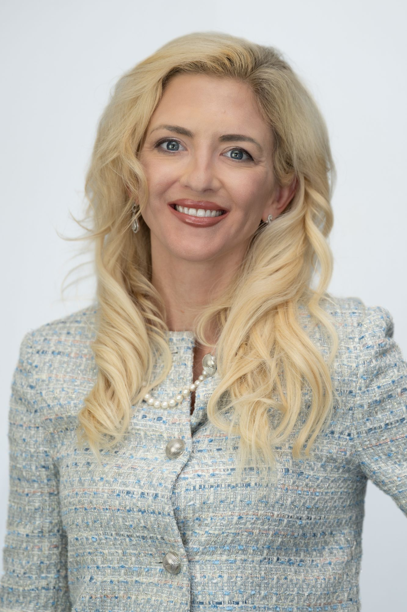

Board of Directors & Committees
Wade Rosen
Chairman of the Board (since April 2020) · CEO (since April 2021)
Born in 1985. Bachelor of Business Administration, University of Denver; MBA, IE Business School, Madrid. Director of Wishlist Inc., ThrivePass Inc., Blue Suit, Inc., and RDI, Inc., and founder of several private technology companies in the United States.
Alexandre Zyngier
Non-Independent Director (since September 2015) · Audit Committee
Born in 1969. Bachelor's in Chemical Engineering, University of Campinas, Brazil; MBA in Finance & Accounting, University of Chicago. Began his career at Procter & Gamble and McKinsey & Co., then CRT Capital Group, Goldman Sachs, and Deutsche Bank. Portfolio Manager at Alden Global Capital (2009–2013); founder of Batuta Capital Advisors LLC. Also a director of EVO Transportation, COFINA, Nu Ride Inc, and Siam Corp.
Jessica Tams
Independent Director (since May 2022) · Chair, Nomination & Compensation Committee
Born in 1976. Graduate of Utah State University in Mathematics, Physics, and Computer Science. Began her career as a Software Engineer and was a Producer on the launch of Xbox Live Arcade before founding the Casual Games Association in 2005. Strategic Advisor for Manga Productions (a subsidiary of Misk Foundation) and for Arrivant.

Kelly Bianucci
Independent Director (since April 2020) · Chair, Audit Committee · Nomination & Compensation Committee
Born in 1984. Undergraduate, Stern School of Business (NYU); MBA, Kellogg School of Management, Northwestern University. Previously led Impresa Financial and Discover Capital, was appointed Executive Director of the Colorado Innovation Network by Governor John Hickenlooper, and earlier was a Channel Marketing Analyst at Take-Two Interactive Software and a media/entertainment consultant at Deloitte Consulting.
Executive Committee
The Executive Committee is the Group Executive instance; it implements the strategy formulated by the Board of Directors. As of June 30, 2024, it is composed of:
Wade Rosen
CEO
Ted Biderman
EVP, General Counsel and Corporate Secretary
Casandra Brown
Senior Director, Licensing
Matt Burnett
Vice President, Strategic Operations
Geoffroy Châteauvieux
Chief Operating Officer, Manager of Infogrames
Andreas Deptolla
Chief Technology Officer
Tyler Drewitz
Director, Atari X
Stephen Kick
Studio Head, Nightdive Studios
David Lowey
Senior Director, Communications
Mike Mika
Head of Studio / Creative Director, Digital Eclipse
Ethan Stearns
Vice President, Games Publishing
Ethan Zoubek
President, Atari Inc.
Matt Hall
EVP, Atari Mobile
Richard Snowdon
Vice President, Atari Europe